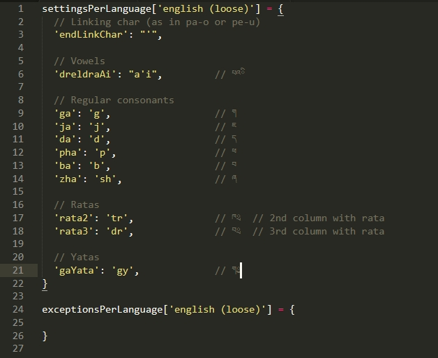

A naive attempt at automatically generating reliable Tibetan transliterations based on customizable sets of rules.
Just copy the repository locally.
new TibetanTransliterator('གང་གི་བློ་གྲོས་').transliterate();
=> 'kangki lotrö' // using default language: 'english (strict)'
=> 'kangki lotreu'
# Use the 'capitalize' option to capitalize the first letter of every group
new TibetanTransliterator( 'ཨེ་མ་ཧོཿ སྤྲོས་བྲལ་ཆོས་ཀྱི་དབྱིངས་ཀྱི་ཞིང་ཁམས་སུ༔ ', { capitalize: true }).transliterate();
=> 'Émaho Trötrel chökyi yingkyi zhingkham su'
# Use the 'language' option to choose which set of rules you wish to follow:
new TibetanTransliterator('གང་གི་བློ་གྲོས་', { language: 'english (loose)' }).transliterate();
=> 'gangi lodrö'
new TibetanTransliterator('གང་གི་བློ་གྲོས་', { language: 'french (strict)' }).transliterate();
=> 'kangki lotreu'
# Or set the language once and for all instead of every transliteration:
TibetanTransliteratorSettings.change('french (strict)');
new TibetanTransliterator('གང་གི་བློ་གྲོས་').transliterate();index.html
compare.html

Each line defines one exception.
If any of the values on the left of the colon is found in the line to be transliterated, then it will be treated as if it was the value on the right of the colon.
Tibetan characters will be transliterated as they would be normally.
Latin characters will be inserted as-is within the transliteration.
If using Latin characters, then between each syllable you need to add an underscore to help the system determine how many syllables the word is made of, even if it does not exactly match how the word is composed. For instance if you want to have སངས་རྒྱས་ always transliterated as 'sangye', you would do:
'སངས་རྒྱས': 'san_gye'but not
'སངས་རྒྱས': 'sang_gye'If a line is defined with a left value that is included in another line with a longer left value, then the longer one will be used. For instance if these two rules are defined:
'སངས་': 'SAN'
'སངས་རྒྱས': 'san_GYE'Then སངས་རྒྱས་ would be transliterated as 'sanGYE', ignoring the first rule.
All rule sets are defined in settings/.
The original.js set is not meant to be edited and serves as the default upon
which all other sets are applied to override the default rules.
For instance the rule for 'kha' in original.js is:
'kha': 'kh',If you wish to display 'kha' as 'ka', you would have this line in your own rule set file:
'kha': 'k',
Every single line in original.js can thus be copy-pasted in another set file
to be overridden. You can edit existing rule sets or create new ones.
Style-specific exceptions can be defined and default ones can be overriden.
Just add your exceptions in exceptionsPerLanguage['my set'].
To add a new rule set just copy an existing one and replace twice the name of the set:
# settings/my-new-set.js
settingsPerLanguage['my new set'] = {
...
}
exceptionsPerLanguage['my new set'] = {
...
}Also don't forget to add the <script> include tag in index.html,
compare.html and tests.html next to the other ones:
<script src="settings/my-new-set.js"></script>
Just open tests.html.
Categories can be clicked to reveal their test cases.
To ease debugging, clicking a Tibetan case on the right side will re-run the test for just that particular case.
See TODO.md
The rules used to deconstruct the syllables into parts (root, prefix, ...) are almost entirely based on John Rockwell's ZALKEJZAMLEKJZA
This software is licensed under the MIT License.
Copyright Padmakara, 2021.
Permission is hereby granted, free of charge, to any person obtaining a copy of this software and associated documentation files (the "Software"), to deal in the Software without restriction, including without limitation the rights to use, copy, modify, merge, publish, distribute, sublicense, and/or sell copies of the Software, and to permit persons to whom the Software is furnished to do so, subject to the following conditions:
The above copyright notice and this permission notice shall be included in all copies or substantial portions of the Software.
THE SOFTWARE IS PROVIDED "AS IS", WITHOUT WARRANTY OF ANY KIND, EXPRESS OR IMPLIED, INCLUDING BUT NOT LIMITED TO THE WARRANTIES OF MERCHANTABILITY, FITNESS FOR A PARTICULAR PURPOSE AND NONINFRINGEMENT. IN NO EVENT SHALL THE AUTHORS OR COPYRIGHT HOLDERS BE LIABLE FOR ANY CLAIM, DAMAGES OR OTHER LIABILITY, WHETHER IN AN ACTION OF CONTRACT, TORT OR OTHERWISE, ARISING FROM, OUT OF OR IN CONNECTION WITH THE SOFTWARE OR THE USE OR OTHER DEALINGS IN THE SOFTWARE.